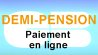
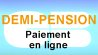
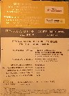

- Actualités
- FluxRSS
- Contact et Accueil
- Filières, horaires
- E.I.E
- Affectations, inscriptions
- Baccalauréat
- Données statistiques
- Réglements intérieurs
- Retards / Absences
- Elèves en difficulté
- Projet d'établissement
- Actions pédagogiques, culturelles et civiques
- Conférences
- Partenariats
- Informatique
- Sorties scolaires
- Atelier Théâtre
- Partenariat avec Athènes
- Partenariat avec Mexico
- Voyages et échanges
- Association sportive
- Espace pedagogique
- C.D.I
- C.I.O
- Stages en entreprises
- C.V.L
- Maison des lycéens
- Intendance
- Cantine
- Réglement
- Tarification
- Paiement en ligne
- Bourses
- Liens utiles
- Personnel non enseignant
- Service médical
- Page des parents d'élèves
- Site des anciens élèves
- Documents à télécharger
A LA UNE
Parcoursup

La procédure d'orientation 2022 vers l'enseignement supérieur débute le 21 Décembre. Après une phase de découverte des formations, les élèves devront s'inscrire sur la plateforme PARCOURSUP en ligne et entrer leurs voeux entre le 20 Janvier 2022 et le 29 Mars 2002 inclus. Pour plus de renseignements se connecter au site PARCOURSUP
26 janvier 2022 - JOURNEE PORTES OUVERTES CGPE

La Journée Portes Ouvertes des CPGE du lycée Charlemagne se tiendra le Mercredi 26 Janvier 2022 à partir de 13h30. En raison des conditions sanitaires actuelles cette journée se déroulera par visioconférences durant tout l'après-midi. Pour les informations de connexion ouvrir la page dédiée Journée Portes Ouvertes 2022
PROTOCOLE SANITAIRE EN VIGUEUR

Vous trouverez ici le protocole sanitaire en vigueur depuis la rentrée 2021
RESTAURATION DE LA BIBLIOTHEQUE DES JESUITES
Suite au permis de construire délivré par la région Ile-de-France le 20 octobre 2021, les travaux de restauration de l'ancienne bibliothèque des Jésuites au 3ème étage de l'aile Nord du lycée Charlemagne vont commencer.
Visite virtuelle de la bibliothèque
L'inauguration de la bibliothèque serait prévue au cours du premier trimestre de l'année 2023-2024.
PRIX LYCEEN DU LIVRE DE PHILOSOPHIE

Pour la troisième année consécutive, des élèves de Terminale participeront au jury du Prix lycéen du livre de philosophie. Ils et elles sont invité(e)s à se rapprocher de Madame Carlin, professeure de philosophie ou de Madame Dubois, professeure documentaliste. Plus d'informations ici Des réunions en petits groupes seront proposées aux élèves désirant participer à cette action. Journée Portes Ouvertes 2022
MESURE ECOLOGIQUE

Chaque lundi et chaque jeudi une poubelle de récupération du papier usagé, à couvercle jaune, sera à la disposition de tous dans la cour du lycée. Cette mesure a été adoptée par le CVL du lycée.
STAGES INTENSIFS DE LANGUES

Des stages intensifs de langues gratuits pendant les vacances sont proposés aux lycéens dans 3 langues : anglais, allemand, espagnol. D'une durée de 15 heures, ils s'étalent sur 5 jours du lundi au vendredi le matin ou l'après-midi pour l'anglais et l'espagnol, et le matin uniquement pour l'allemand.
AIDE AUX ELEVES EN DIFFICULTE

« Les élèves du lycée Charlemagne bénéficient d’aides reposant sur une offre diversifiée et recherchant une
individualisation des formes de soutien :
1/- Les élèves néo francophones ou ayant appris le français comme langue seconde peuvent bénéficier d’un
soutien en Français Langue Etrangère. Le groupe est désigné par les enseignants.
2/- Les enseignants mettent en place des modules de remise à niveau pour les élèves qui rencontrent des
difficultés particulières dans l’adaptation aux apprentissages en classe de seconde. Ces modules sont animés
par un ou deux enseignants, sur des créneaux de deux heures. Les élèves sont désignés par les professeurs
principaux des classes de seconde.
3/- Les élèves, soutenus par le Conseil de la Vie Lycéenne, organisent à partir du deuxième trimestre un
système de tutorat élève/élève. Ce tutorat peut concerner une discipline ou plusieurs mais aussi des
questions de méthodologie.
4/- Certains élèves de seconde et de première peuvent avoir accès à un logiciel d’entrainement à
l’orthographe : le projet « Voltaire ». les élèves doivent demander au professeur principal un mot de passe
pour accéder à l’application. »
PROJET VOLTAIRE

Par le biais du Projet Voltaire, numéro 1 de la remise à niveau en orthographe, les collège et lycée Charlemagne s'engagent dans cette voie de la remédiation. Cet outil pédagogique permet à tout élève de revoir ou approfondir ses connaissances en orthographe, grammaire, conjugaison et ainsi d'améliorer sa maîtrise de l'écrit avant les épreuves du brevet, du baccalauréat ou des concours aux grandes écoles. Pour faire une demande d'inscription